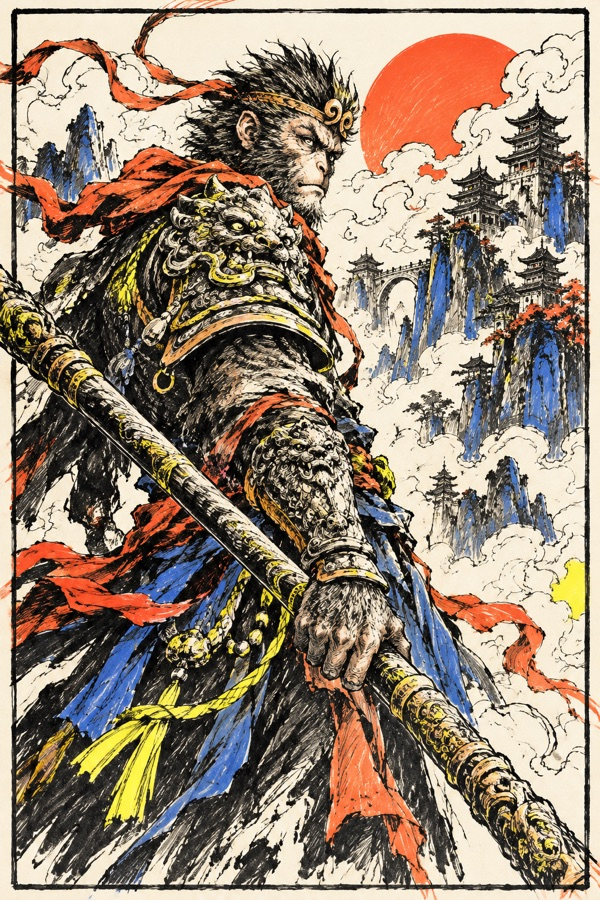
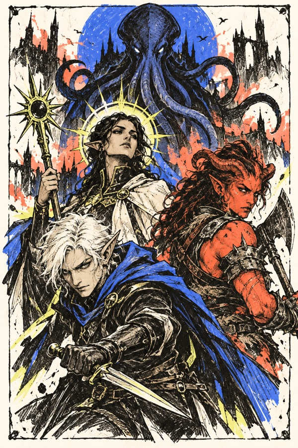
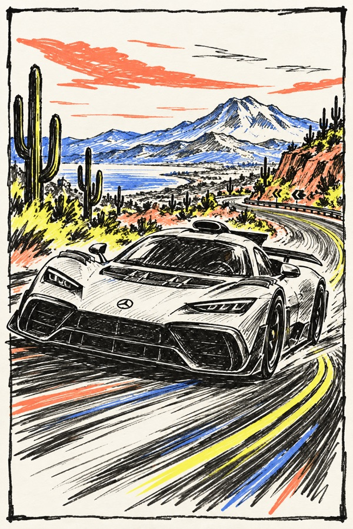
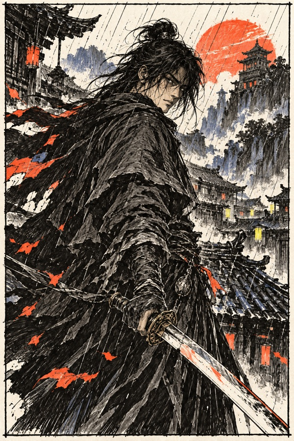

游戏清单 / 05 PICKS
PLAY LIST.
在另一个世界里，继续探索。

01 塞尔达传说：旷野之息
每次翻过山头都有新的惊喜，自由探索本身就是最好的奖励。

02 黑神话：悟空
熟悉的神话长出凌厉的动作节奏，沿途山水也值得停下来细看。

03 博德之门 3
每个选择都能把故事带向意料之外的方向，和同伴一起闯祸尤其有趣。

04 极限竞速：地平线 5
踩下油门，辽阔的公路和变幻的天气就成了一场轻快的旅行。

05 影之刃零
利落的刀光与浓郁的武侠气质，让这个江湖有了鲜明的辨识度。
封面为 AI 手绘演绎，作品名称及相关形象归各自权利人所有。